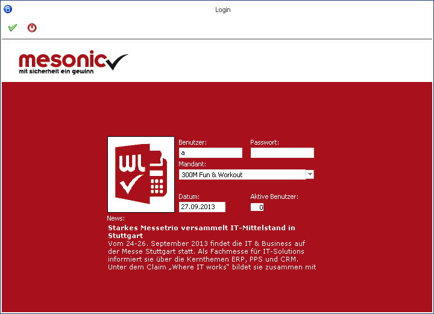
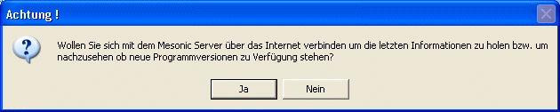

Das erste Fenster, welches angezeigt wird, wenn die WinLine gestartet ist, ist das Login-Fenster. In diesem Fenster muss sich der Benutzer identifizieren (Name und Passwort eingeben) und es muss auch der Mandant ausgewählt werden, mit dem der Benutzer arbeiten will.

Ø Benutzer
Hier wird der Benutzername eingegeben. Wenn Sie sich das erste Mal anmelden, können Sie auch den Benutzer "a" oder "Mesonic" verwenden. Wenn das Programm schon verwendet wurde, wird immer der zuletzt verwendete Benutzer vorgeschlagen.
Ø Passwort
Hier muss das Passwort des Benutzers eingegeben werden. Wenn Sie sich das erste Mal anmelden, können zu den Benutzern "a" oder "Mesonic" die Passwörter "b" oder "Mesonic" verwendet werden.
Achtung
Wenn ein Netzwerk vorhanden ist und der Benutzername im Netzwerk gleich dem Benutzername in der WinLine ist, dann wird der Benutzername und das Passwort der WinLine automatisch im Login-Fenster vorgeschlagen. Das Programm weiß in diesem Fall, dass sich der Benutzer bereits im Netzwerk autorisiert hat und somit muss der Benutzer in der WinLine nicht nochmals ein Passwort eingeben. Ist diese Funktion nicht gewünscht, muss in der Benutzerverwaltung der WinLine ein anderer Benutzername vergeben werden.
Hinweis
Im Programm WinLine ADMIN muss das Passwort immer eingegeben werden, auch wenn der WinLine-Benutzer gleich dem Windows-Benutzer ist.
Ø Mandant
Hier muss der Mandant ausgewählt werden, der bearbeitet werden soll, wobei immer der zuletzt bearbeitete Mandant vorgeschlagen wird. Um einen anderen Mandanten auszuwählen kann die Auswahlbox geöffnet und der gewünschte Mandant ausgewählt werden oder es wird durch Eingabe des Mandantenkürzels die Mandantenauswahl getroffen.
Achtung
In der Auswahlbox werden nur die Mandanten angezeigt, für die der Benutzer auch die notwendige Berechtigung hat (Details finden Sie im WinLine ADMIN - Handbuch).
Ø Datum
Hier wird das aktuelle Systemdatum des Computers vorgeschlagen. Das Datum kann aber beliebig verändert werden und wird im Programm als aktuelles Datum verwendet (z.B. im Belegerfassen, im Buchen, etc.).
Ø Aktive Benutzer
An dieser Stelle wird angezeigt, wie viele Benutzer bereits in WinLine arbeiten.
Ø News
In dem News-Bereich werden aktuelle Informationen von mesonic dargestellt.
Nachdem alle Eingaben durchgeführt und bestätigt wurden, wird folgende Meldung angezeigt:

Wird diese Meldung mit JA bestätigt, wird eine Verbindung mit dem mesonic-Server hergestellt und es wird geprüft, ob es Neuigkeiten gibt. Das können Programmversionen sein (nur im kleinen Umfang), das können nützliche Hinweise zur Programmbedienung, neue Formulare oder Ähnliches sein.
Wurden Neuigkeiten gefunden, dann werden diese downgeloadet und im Anschluss daran wird das Fenster "Neuigkeiten" angezeigt, in dem alle Einträge sichtbar sind.
Wir die Meldung mit Nein bestätigt, erfolgt kein Download. Das Fenster "Neuigkeiten" kann aber jederzeit im Ribbon "INFO CENTER UND MARKOS" durch Anklicken des Buttons "Internet Update" geöffnet werden.
Das Intervall, in dem nach Neuigkeiten am mesonic-Server gesucht werden soll, kann im Programm WinLine START über den Menüpunkt…
1 Parameter
1 Einstellungen
… festgelegt werden. Standardmäßig wird dieses Intervall nach dem Erstaufruf auf 7 Tage gestellt.
Achtung
Wenn kein Internetanschluss vorhanden ist, mit dem diese Funktion ausgeführt werden kann, dann sollte in den Einstellungen das Intervall auf 30 Tage gestellt werden - damit muss die Meldung (die auf alle Fälle immer kommt) nur einmal im Monat bestätigt werden.
Buttons
Ø  Ok
Ok
Durch Anwahl des Buttons "Ok" bzw. der Taste F5 werden die Login-Informationen bestätigt und der Einlog-Vorgang durchgeführt.
Ø  Abbruch
Abbruch
Durch Anwahl des Buttons "Abbruch" bzw. der Taste ESC wird der Einlog-Vorgang abgebrochen.